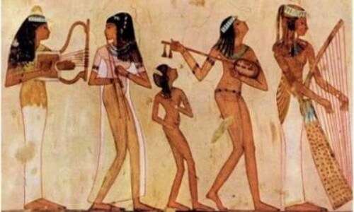
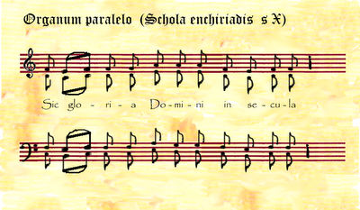
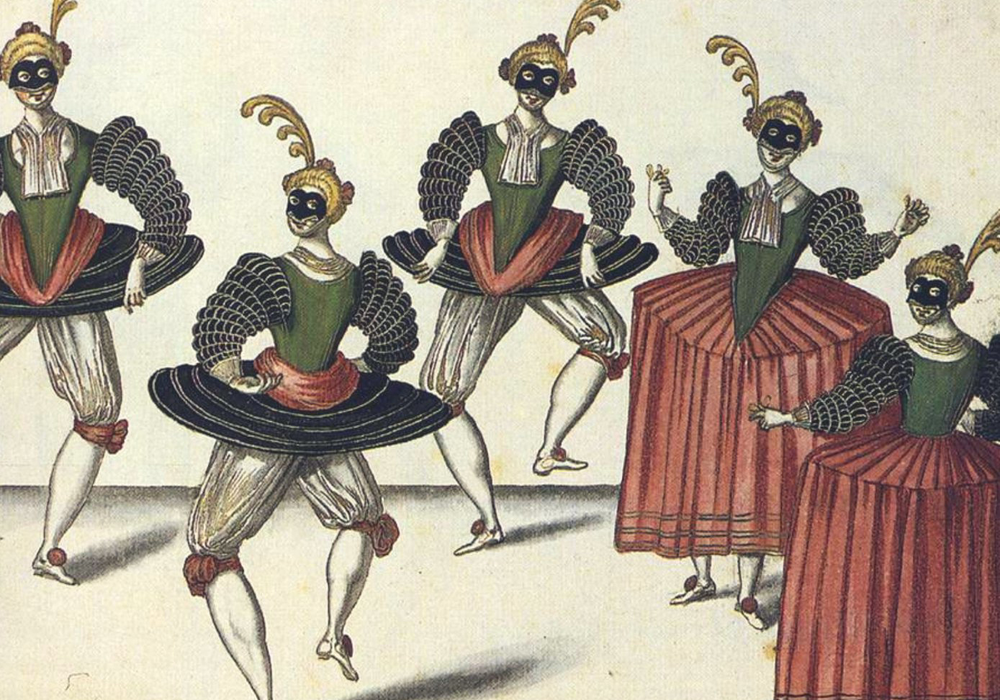

Historia de la Música
Un viaje a través del tiempo descubriendo la evolución del arte musical
Harmony Sound
Fundada en 2024 con una visión innovadora de la educación musical
Todo comenzó en un pequeño estudio de música en la ciudad, donde un grupo de músicos, profesores y amantes de la música decidieron crear un espacio digital para compartir su pasión y conocimientos con el mundo.
Nuestro fundador, inspirado por su experiencia como músico y educador, reunió a un equipo diverso de profesionales del ámbito musical para desarrollar una plataforma que no solo mostrara instrumentos, sino que contara la historia detrás de cada nota, cada ritmo y cada melodía.
Desde nuestros humildes comienzos, hemos crecido hasta convertirnos en una comunidad vibrante de músicos, estudiantes y entusiastas, compartiendo conocimientos y pasión por el arte musical que ha definido culturas y generaciones.
Evolución de la Música a través del Tiempo

Los Orígenes
La música nace en la prehistoria como forma de expresión y comunicación. Los primeros instrumentos fueron percusiones corporales, seguidos por instrumentos rudimentarios hechos de huesos, conchas y materiales naturales.
40,000 - 3,000 a.C.

Civilizaciones Antiguas
Las grandes civilizaciones como Egipto, Mesopotamia, China, India, Grecia y Roma desarrollaron tradiciones musicales complejas. Los griegos establecieron las bases teóricas de la música occidental con Pitágoras.
3,000 a.C. - 476 d.C.

Canto Gregoriano y Polifonía
La Edad Media estuvo dominada por la música religiosa, con el canto gregoriano como principal expresión. Surgió la polifonía y se desarrollaron los primeros sistemas de notación musical. Los trovadores y juglares popularizaron la música secular.
476 - 1450

Humanismo Musical
El Renacimiento trajo un renovado interés por el arte y la cultura clásica. La música se volvió más equilibrada y armoniosa. Compositores como Palestrina y Monteverdi desarrollaron nuevas formas musicales. Se perfeccionaron instrumentos como el laúd y la viola da gamba.
1450 - 1600